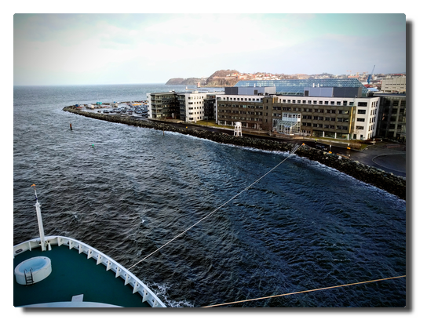
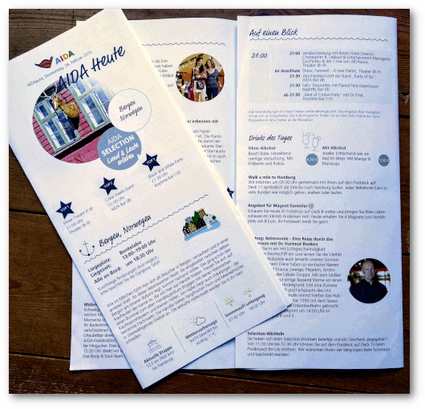
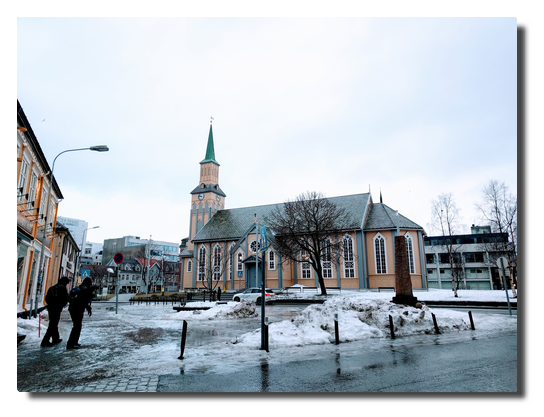
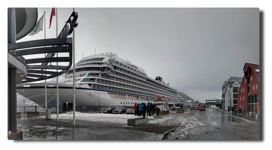
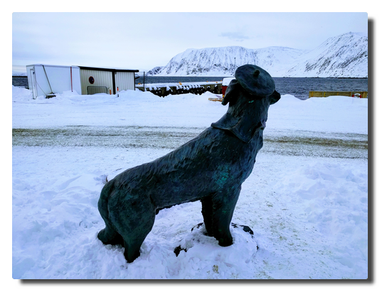

Love Boat - The Real Story. Bye Trondheim
Tag 12. Trondheim
Da mein Strava-Spaziergang dann doch optisch nicht so der Brüller war (wir waren einfach zu schnell), wollte ich das heute während des Liegens im Hafen mit einer Laufrunde nachholen. Doch ich hatte die Rechnung ohne die gesperrten Decks gemacht. Gut, dann schaue ich mir eben das triste Trondheimer Hafengelände an, macht ja auch nichts.
Souvenirjagd
Nach dem Frühstück geht es erneut in die Stadt. Ich drehe noch eine große Runde auch hoch zur Kristiansten festning, von der aus man angeblich einen großartigen Blick auf die vorgelagerte Insel Munkholmen mit seinem ehemaligen Kloster/Festung/Gefängnis. Falls man nur deswegen dort hoch geht, kann man sich das sparen, vom Schiff aus hatte man einen Premiumblick in dieser Hinsicht.
Als Souvenirshop habe ich einen Laden der Supermarktkette Rema 1000 auserkoren. Ich kaufe mehr Brunost, Lefsegodt und Tubenkäse, so viel ich tragen kann. Ich meine, ein Grinsen im Gesicht der Kassierin gesehen zu haben. Du må ikke dømme meg, jeg trenger bringe suvenirer til venner mine tilbake i Tyskland.
 |
|---|
| Souvenirs |
Gegenteiltag
Ein Typ fährt mit dem Rad vor den Supermarkt, steigt ab, lehnt das Rad an und geht hinein. Mein Gehirn kann das nicht verarbeiten.
 |
|---|
| WTF |
Alle an Bord
Um 14 Uhr soll es weitergehen nach Bergen, doch durch den starken anlandigen Wind ist es uns nicht möglich abzulegen. Angesichts der vergangenen Tage unken die ersten bereits, dass auch Bergen für uns wohl ins Wasser fallen würde. Gegen 16 Uhr erwischt die Brücke das langersehnte kurze Abflauen des Windes und wir sind frei und werden voraussichtlich pünktlich in Bergen ankommen.
|  |
|---|
| Sind wir noch da? |
Geh mir weg
Auf einem Kreuzfahrtschiff wird man mit verschiedenen Grenzen seiner Komfortzone konfrontiert. Da wäre zum einen die offensichtlichste: Wasser. Davon abgeleitet ergibt sich die zweite: die Einschränkung der Bewegungsfreiheit. Ebenfalls eine Folge daraus ist der Überdruss an den anderen Menschen. Dieser Zustand hat sich glücklicherweise erst in den letzten Tagen der Reise bei mir eingestellt.
Als Passagier hat man im Gegensatz zur Crew viel Freizeit. Aber korrektes Freizeiten will gelernt sein. Neben dem physiologisch inaktiven Freizeiten wie lesen, zuhören, schauen und essen bleibt noch das Yang, das physiologisch aktive Freizeiten. Dies ist limitiert auf das Sportstudio und das Herumlaufen auf dem Schiff. Der Mensch ist rundherum ein Gewohnheitstier und so adaptierte ich schnell gewisse Gewohnheiten. Aber nicht nur ich.
The Hunger Game
Ein Grund für den exzessiven Bewegungsdrang ist die bis auf kurze Pausen vorhandene Präsenz von Essen. Man möchte annehmen, dass dies aufgrund dieser Umstände eine periphäre Angelegenheit wäre. Zu meiner Überraschung ist dem nicht so. Ab 7 Uhr gibt es Frühstück, ab 6:45 Uhr sammeln sich Leute vor dem Restaurant. Ab 11:00 Uhr gibt es eine Themenaktion auf dem Pooldeck und das Pooldeck ist voller Menschen, die nach dem Themen-Snack anstehen. Um 12:30 Uhr öffnen die Pforten zum Mittagessen, ab 12:15 Uhr stehen Leute vor dem Restaurant. Gegen 12:20 Uhr leert sich langsam die bis dahin vollbesetzte AIDA Bar, ergänzt durch Durchlaufverkehr in Heck-Richtung. Dasselbe findet noch einmal um 18:00 Uhr statt. Ebbe und Flut. Dazwischen grast der Heuschreckenschwarm noch Kaffee und Kuchen im Calypso ab (siehe Tag 2). Sind das eigentlich immer dieselben Menschen, die ganz offensichtlich mehrmals täglich kurz vor dem Hungertod stehen?
Aus dieser Beobachtung bzw. Erfahrung folgt auch, dass sich das Zeitfenster der Nahrungsaufnahme absurderweise immens verkleinert, wenn man zum einen einen Sitzplatz bekommen möchte und zum anderen zur Stressvermeidung (wir sind schließlich im Urlaub hier) einem großen Andrang am Buffet entgehen möchte.
AIDA-Feedback
Ich weiß nicht, ob man diesen Konflikt auflösen kann, schließlich kann man die Menschen nicht ändern. Aus persönlicher Sicht und ohne die Erwartungshaltung meiner Mitreisenden zu kennen, würde ich behaupten, dass das Kaffee- und Kuchen-Buffet und die Poolaktionen am Tage überflüssig sind.
Love Boat - The Real Story. Trondheim
Tag 11. Vakker byen
Wir sind seit eineinhalb Tagen auf See und das Schiff wird kleiner. Gerade bei schwerem Seegang ist die Bewegungsfreiheit stark eingeschränkt, weil dann die Außendecks zum großen Teil gesperrt sind (Deck 6 und 11, Deck 10 nur ein paar Meter neben den Türen zum Luft schnappen offen). Morgens schwinge ich mich also in das Hamsterrad auf Deck 9 und nach der verdienten Dusche noch auf einen Morgenspaziergang nach draußen. Also: - aus der Kabine raus, eine Etage nach oben laufen, Staubsaugercrew grüßen - auf Deck 6 raus und eine Runde herumlaufen (oder zwei), die Außendeckwartungscrewleute grüßen (halten die mich inzwischen für bescheuert?) - die Treppe am Heck nehmen, an der Ocean Bar vorbei, andere Seite weiter nach oben, am Calypso auf Deck 9 vorbei und weiter nach oben - Deck 10, die Raucher bei Morgenkippe und -kaffee grüßen, einmal am Pooldeck rum, Aufräumcrew grüßen (halten die mich...?) - Treppe nach Deck 11 nehmen, mindestens zwei Runden drehen mit Abstecher nach Deck 12 - das Ganze wieder zurück Wie ein Knasti auf Hofgang.
Am Abend machen wir endlich in Trondheim fest und werden bis zum frühen Nachmittag bleiben. Der stürmische Seetag hat alle landhungrig gemacht und so entern nach dem Abendessen Scharen von Passagieren und einige Leute von der Crew die fast leere Stadt.
 |
|---|
| Nidarosdomen |
Wo sind wir hier eigentlich?
Wir gehen Richtung Innenstadt, vorbei am illuminierten Nidarosdomen, über Brücken und hin und her. Seltsam erscheint uns die Vertrautheit der Stadt. Während bisher die Ort- und Landschaften sehr andersartig waren, erinnert Trondheim im Stil straßenzugweise mehreren von uns unabhängig voneinander an die Stadt Potsdam. Es ist so seltsam, dass wir an manchen Stellen stehen bleiben und völlig verblüfft sind. Davon abgesehen, dass Trondheim und Potsdam keine direkte Verbindung miteinander haben, gibt es doch einige Parallelen, die dieses Trugbild und die Konvergenz bei der städtischen Entwicklung fördern: * beide Städte sind quasi gleich alt * sie sind vergleichbar groß in der Einwohnerzahl * sie sind von viel Wasser umgeben * sie verfügen über ein Straßenbahnnetz * sie gelten als Kulturstädte * Trondheim war lange Hauptstadt des Landes, Potsdam offizielle Residenzstadt des Königreich Preußen
 |
|---|
 |
| Trondheims nette Ecken |
Absacker
Nach der Rückkehr zum Schiff machen wir Pläne für den nächsten Tag und verabreden uns in der AIDA Bar. Die Schiffsband spielt Klassiker mit Crewmitgliedern und wir trinken Bier. Ich habe den Trollfjord schon vergessen.
 |
|---|
|  |
| Tagesplaner im Bordportal und tägliche Info in Papierform |
Love Boat - The Real Story. Tromsø
Tag 8. Tromsø rain, Tromsø rain
Mittags erreichen wir den Hafen der größten nordnorwegischen Stadt Tromsø, wo wir einen ganzen Tag Aufenthalt genießen. Vom Liegeplatz bis in die Innenstadt ist ein Busshuttle eingerichtet.
 |
|---|
| Empfang! |
Ich laufe durch die Stadt, überquere natürlich die Tromsøbrua (Tromsøbrücke) bis zur Ishavskatedralen (Eismeerkathedrale).
Es regnet bei Temperaturen deutlich über dem Gefrierpunkt und der komprimierte Schnee hat sich durch wiederholtes Antauen und Gefrieren in dicke Eisplatten verwandelt, die nun abtauen. Man läuft also auf wasserbedecktem Eis, das von tiefen Pfützen umrahmt wird, die von schnell fließendem Schmelzwasser genährt werden. Am Abend sind meine Schuhe durch.
Die vertagte Polarkreistaufe wird nun heute nachgeholt, wegen des Regens allerdings nicht auf dem Pooldeck, sondern in der AIDA Bar. Manche dieser Aktionen lassen erahnen, wie ballermanesk es beim schwimmenden Cluburlaub sonst üblicherweise zugeht. Ich verziehe mich alsbald.
Ein Teil unserer Reisegruppe geht später noch ins Konzert in die Eismeerkathedrale und ich früh zu Bett.
 |
|---|
|  |
|  |
| Alles ganz schön hier und andere Reedereien haben auch schöne Schiffe (Ja, das ist die "Viking Sky"). |
Tag 9. Sortland calling
Es regnet. Wir liegen immer noch in Tromsø und ich bin mal wieder in der Stadt unterwegs. Ich kaufe Postkarten, die ich beim nächsten Landgang einwerfen möchte. Es regnet.
Wir legen ab mit Ziel Sortland. Ich verbringe den Nachmittag mit Kaffee, Kreuzworträtsel und Kartenschreiben. Bester Urlaub aller Zeiten.
Tag 10. A storm is coming
Der Wecker klingelt in aller Früh', denn mein Landausflug zum Trollfjord geht um 8:00 Uhr los. Ich sitze mit anderen Ausflüglern am Frühstückstisch und wir verabreden uns für später. Nun, kurz vor 9 Uhr wird klar: es wird keinen Trollfjord geben. Es wird kein Sortland geben.
Wegen des Seegangs und des Windes können wir nicht in Sortland anlegen und erfahren im Laufe des Vormittags, dass wir einen vorgezogenen Seetag einlegen und direkt nach Trondheim durchfahren. Das Schiff rollt sich gemächlich durch den Atlantik und fordert zahlreiche Opfer, die in ihren Kabinen ausharren, bis es besser wird. Freie Platzwahl in den Bars.
In mir verbreitet sich eine leicht sentimentale Stimmung. Mehr als die Hälfte der Reise liegt hinter uns, wir fahren südwärts, es liegen nur noch zwei Stopps vor uns, bevor es in einer weiteren Tagesreise zurück nach Hamburg geht.
Mein Gehirn kann den Gedanken noch nicht ganz verarbeiten, dass in wenigen Tagen, nachdem man für zwei Wochen auf diesem Schiff mit hunderten von Menschen zusammengepfercht war und jeden Tag dieselben Leute gegrüßt und mit einigen einen kurzen Schwatz auf dem Flur gehalten hat (Hello Katrina!) die Wahrscheinlichkeit gegen Null geht, irgendjemanden von ihnen jemals wieder zu sehen. Die Gäste fahren nach Hause und machen da weiter, wo sie vor Hamburg aufgehört haben und die Crew sieht für zwei Wochen die nächsten Gesichter und macht da weiter, wo sie vor Hamburg aufgehört hat, nämlich sich ohne Unterlass den Arsch abzurackern (Kudos to all of you).
In diesem Zusammenhang erscheint es bizarr, Verkumpelungsversuche bei Gästen mit Crewmitgliedern zu sehen. Wie funktioniert das? Machen die so häufig Kreuzfahrten, dass die immer wieder den gleichen Crew-Leuten über den Weg laufen? Ich kenne solche freundschaftlichen Annäherungsversuche aus meiner eigenen Tätigkeit im Kundenservice. Es liegt in der Natur der Sache, mit einigen Menschen näher auf einer Sympathieebene zu sein als mit anderen. Und bei diesen ist man auch zu einem gewissen Grad bereit, auf einer persönlicheren Ebene zu kommunizieren, ohne dabei die Grenze der Professionalität zu überschreiten.
Auf einem Kreuzfahrtschiff ist die Situation völlig zugespitzt. Als Gast mache ich vielleicht die Reise meines Lebens, bei der jeder Tag aufregend ist. Für die anderen Gäste bist du der nervende Nachbar mit dem komischen Dialekt oder der nette Zufallsgesprächspartner beim morgendlichen Rundgang an Deck. Für die Crew bist du diejenige, die für zwei Wochen ihre Klamotten auf dem Sofa in der Kabine verteilt, in den nächtlichen Morgenstunden durch das Schiff schlendert und an der Bar Ipanema ohne Zucker und noch mehr Espresso trinkt. Bis die nächsten kommen.
Love Boat - The Real Story. Honningsvåg
Tag 6. Das Ende der Welt
Der vergangene lange Tag bringen mich dazu, bis 7 Uhr auszuschlafen. Wir werden noch bis zum Abend auf See unterwegs sein und dann im Hafen von Honningsvåg übernachten.
Alle sind nach den Erlebnissen bester Stimmung. In unserer Reisegruppe ist aktuell niemand seekrank und auch unser Jüngster scheint sich nach Anlaufschwierigkeiten etwas eingelebt zu haben, er klatscht zum Frühstück das Personal ab und verabredet sich für später im Kids Club.
 |
|---|
| Nordkapumfahrung in mystischem Licht |
Am Nachmittag passieren wir das Nordkap bei Sonnenuntergang. Die Sicht ist klar und man kann von weitem die Nordkaphalle und den Globus sehen. Ich stehe fast eine Stunde auf Deck 6 und genieße die Aussicht.
Später wird es windig und es schneit. Die nächtlichen Nordkaplandausflüge werden abgesagt, weil die Straße aufgrund des Schneegestöbers nicht freigegeben ist. Ob der Ausflug morgen klappt, ist noch unsicher.
K. und ich schlendern durch das leere Honningsvåg. Wir schauen uns genauer das Schiff an und sehen: hinter unseren Kabinen befindet sich der Crew-Nachtclub, das erklärt einiges...
 |
|---|
| Honningsvåg im Schnee. Ein Schiff. |
Dann grüne Schleier. Polarlichter. Als wir aufs Schiff zurückkehren, geht das Spektakel richtig los. Grüne, auch ein wenig rote Nordlichter tanzen stundenlang für uns am Himmel.
 |
|---|
|  |
| Not all heros wear capes. Bamse, the canine war hero. |
Tag 7. Nordkap
Es liegen zwei perfekte Polarlichtkreuzfahrttage hinter uns. Alles, was nun noch folgt, ist nur noch Deko auf dem Sahnehäubchen.
Es geht auf zum Landausflug zum Nordkap, das wir bereits gestern von der Wasserseite zu sehen bekamen. Dort oben war es kalt und windig und die Sicht war klar und so war der Ort auch ohne Mitternachtssonne definitiv den Besuch wert.
 |
|---|
| Hilsener fra Nordkapp! Touristenlevel over 9000! |
Gegen Abend wird der Seegang wieder rauher und so lasse ich den Tag gemütlich in der AIDA Bar ausklingen.
 |
|---|
| Es ist alles so furchtbar... |
Love Boat - The Real Story. Bodø
Tag 5. Land in Sicht
Mit einer frühmorgendlichen Sportrunde lasse ich den Tag beginnen. Als das Schiff sich dann langsam unserem zweiten Hafen Bodø nähert, bietet sich um uns herum ein atemberaubend schönes Panorama. Dieser Tag verspricht großartig zu werden.
 |
|---|
| Postkartenmotiv |
Nach der letzten unruhigen Nacht sind die Passagiere heiß darauf, das Schiff zu verlassen. Die Ausflugsbusse stehen bereit und trotz der Information, dass Bodø eine hässliche Stadt sei, macht sich unsere Reisegruppe zum üblichen Fußmarsch auf.
Die angepriesene Hässlichkeit der Stadt ist ihrer nahezu vollständigen Zerstörung bei einem deutschen Luftangriff im Jahr 1940 geschuldet. Viele Gebäude wurden durch eher untraditionelle Gebäude ersetzt und so erinnert die zentrale Fußgängerzone an die deutscher Städte.
Auch in einem Reisebericht, den ich nach der Rückkehr las, war man geradezu empört, in dieser unansehnlichen Stadt Halt gemacht zu haben. Das hat mich im Nachhinein nochmal zusätzlich verärgert: will man auf so einer Reise nun Land und Leute sehen oder was? Norwegen ist wie der Rest der Welt kein Märchenland und besteht aus mehr als schöner Landschaft und überteuerten Schlittenhundfahrten für Touristen.
Wenn man ein wenig die Augen aufmacht, kann man auch in Bodø Entdeckungen machen, etwa die lokalen Streetart-Kunstwerke.
 |
|---|
| Streetart: "Malstrøm" von David de la Mano |
Während unseres Erkundungsrundgangs erspähe ich einen Supermarkt - es ist Zeit, mein Norwegisch auf die Probe zu stellen und norwegische Spezialitäten zu erwerben: Brunost (brauner Käse) und Lefsegodt (weiches Gebäck mit einer Art Frischkäsecreme).
 |
|---|
| Geht ne Deutsche in Norwegen in einen Kiosk. Hitler. ROTFL. (leider etwas unscharf) |
Am Nachmittag gehe ich noch einmal allein durch die Stadt, genieße die Unbekanntheit der Umgebung, gehe neugierig durch die Straßen und bin pünktlich zum Abendessen zurück an Bord.
 |
|---|
| Oh, wie schön ist Bodø |
Leinen los, wir fahren weiter nach Norden!
Ankes anekdotischer Tipp
Ab dem dritten Tag vermisste ich das Radfahren. In Kombination mit der Neigung, die Umgebung selbständig zu erkunden, durchfuhr mich ein Gedanke: Ein Faltrad hätte man mitnehmen sollen. Je Passagier kann man zwei große Gepäckstücke aufgeben. Wenn man wie ich mit einem auskommt, sollte es theoretisch kein Problem sein, ein ordentlich verpacktes Faltrad (± 12 kg) mitzunehmen. Dies vergrößert den eigenen Radius an Land ungemein.
Die Nacht der Nächte
Der Abend beginnt ruhig. Dies sollte sich allerdings innerhalb kürzester Zeit ändern. Seit der diffizilen Wetterlage am zweiten Seetag sind wir Bordportal-süchtig - Geschwindigkeit, Kurs, Wind, wir sind informiert.
K. traut ihren Augen kaum: auf dem Bild der Bugcam sieht man grüne Schleier am Himmel. M. wird nach oben geschickt, um die Lage zu evaluieren. In Ungläubigkeit und Aufgeregtheit ziehe ich mich warm an.
Wir betreten Deck 11, dort haben sich bereits einige Leute mit ihrem teuren Fotoequipment in Position begeben. Der Himmel ist bewölkt, einen Tag vor Vollmond strahlt der Mond die Meeresoberfläche und Landmassen der Lofoten an. Das allein erzeugt eine atemberaubende, mystische Atmosphäre.
Es wird getuschelt, man schielt sich auf die Displays. Jemand zeigt auf sein Kameradisplay und sagt "Da ist es." Wir starren in den Himmel und sehen: nichts.
Wir starren weiter und beginnen, einen Unterschied zwischen den vom Mond hell angeleuchteten Wolken und diffusen Schleiern zu sehen. Ja, die Schleier sind grünlich und sie bewegen sich leicht. Das soll es also sein?
Wir verharren weiter in der Winternacht erstarrt im Starren in den Nachthimmel. Die Wolken lichten sich tatsächlich. Die Wettervorhersage sagt für die nächsten Tage Wolken und Niederschläge an, das Islandtief zieht uns immer noch hinterher, und so fällt irgendwo der Satz "Heute ist die Nacht der Nächte."
Deck 11 erwacht zum Leben. Die Sichtung der Polarlichter wird in den Bauch von Stahl-Moby Dick weitergetragen. Die Kälte treibt die Leute immer wieder zum Aufwärmen hinein und der Grund dieser Reise wieder hinaus.
Der Himmel gibt grünes Licht. Frost und Freude, die treuen Begleiter der Polarlichter, bleiben uns bis etwa 2 Uhr erhalten.
Was für ein großartiger Tag.